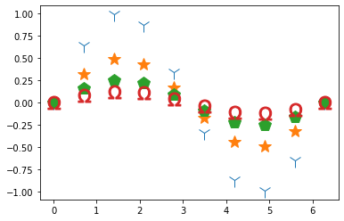
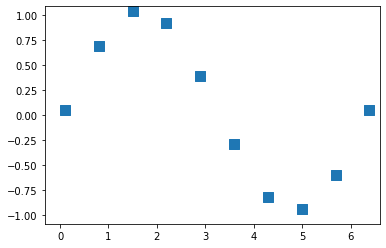
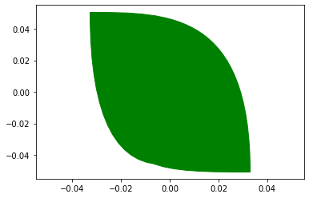
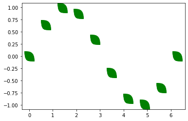
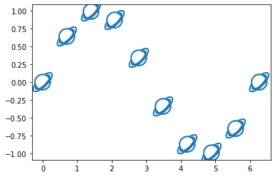
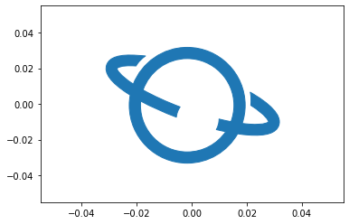
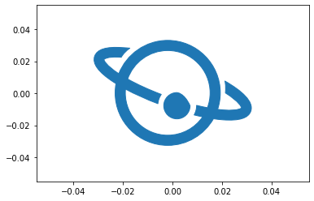
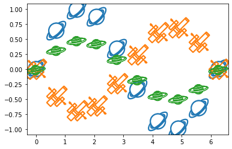

This tutorial is also available as a Jupyter Notebook here
Add a little personal touch or more options for clarity to your scatter plots with your own custom markers! In this short tutorial I'll explain step by step how you can create and use virtually any shape you can think of as a marker.
Things you may need:
Method One: Drawing your own simple shapes
There are already a variety of simple marker shapes to choose from in matplotlib:
However, if these don't quite cut it, you can draw your own shapes by creating matplotlib 𝙿𝚊𝚝𝚑 objects. Path objects consist of two lists: one of the shape's vertices, and other with descriptions on how to draw the lines between those vertices, called codes. The path code tells python how to draw the line to the corresponding vertex from the previous one. Here's a simple square:
But we can get a little more creative. Let's make something else, but still relatively simple:
It's a leaf! You may have noticed I used a different path code here. CURVE3 draws a quadratic Bezier curve over 3 points: 2 endpoints and one control point. The vertex you give the CURVE3 code will be the control point of a curve beginning from the vertex before it and ending at the one after it (3 points total). There is another possible code, CURVE4, which is the same thing but with 2 control points. Check out here for more info. Looking at my creation up close, I'm satisfied and can plot my leaves blowing sinusoidally in the wind:
Method Two: Using SVG Images
If you want something a little more complex, you can directly plot images in SVG ("Scalar Vector Graphics") format.
Step 1: Your image
To begin, you will need to decide on the image or shape you would like to convert into a marker. The only requirement is that you must have your image as a SVG file. Don't worry - it is possible to convert PDFs and PNGs to SVGs for free online. For best results, keep the image simple and make sure it has a transparent background. You can also save your own digital drawings as SVGs or find SVG clipart online. (Note: when taking images from the internet, always be aware of the copyright and how you will use them. Using copyrighted images once in a limited capacity for "scholarly" purposes (e.g., in your lectures, at a conference, etc.) falls under "fair use" and is fine, but using them in a way in which access is unlimited or you make money is not. If you're worried about legal ambiguity, it's best to stick to images in the public domain or under a creative commons license.)
Create a new directory and save your image there.
Step 2: Install svgpath2mpl and svgpathtools
Next, you need the svgpath2mpl and svgpathtools packages. You can simply use pip install on the command line or in your notebook.
The svgpathtools package allows us to read SVG paths into python, and svgpath2mpl will allow us to parse the SVG path of our image to a matplotlib 𝙿𝚊𝚝𝚑 object.
Note: svgpathtools is not necessary if you prefer to manually copy and paste the "d" string of the SVG path. This may or may not be necessary depending on your image. See Step 4a for more detail.
Step 3: Read in the path
Create a new Jupyter Notebook or script in the same directory as your image. Import key functions from our new packages and matplotlib, and read in the path:
What we care about are the vertices and path codes, like our simple drawings above. These are stored in the "d" string in the attributes variable. Pass this through the parse_paths function, which will return a matplotlib path object:
Step 4: Minor touchups
You're almost ready to use your new marker! Before you do, you need to do just a few minor adjustments to our path object. First, out of the box, matplotlib will want to plot your marker such that the lower left corner is at the center of your data point, so let's just shift the vertices slightly.
Next, the image will be upside down and flipped, so let's take care of that as well. (Note: if you converted a PNG to SVG, you can skip this step)
And there you go! Ready to plot!
Step 4a: Troubleshooting
If you plot your new marker and parts of the image are missing, this may be because there are multiple elements not captured by the first "d" string. In this case, you may have to import the SVG path manually:
Open the SVG file in the image processing software of your choice. Be sure to select both "Import Paths" and "Merge Paths" if you are given the option when opening the file. I use the unfortunately named GIMP (GNU image manipulation program) software, which is free for Windows. Next, we want to export the SVG path. In GIMP, this is done by right clicking on "Imported Path" in the Paths window and selecting Export Path. If you can't find this, you can also select the image, then click Select > To Path. Go to the Paths window, right click on Selection and click Export Path. Save the path as a text file in your directory.
In photoshop, I believe this is done by selecting the appropriate layer, then right clicking on the selection and selecting Export > Export As. Choose SVG format and export to a text file.
Open the text file and look for a long string after a d = "....". Copy the string and paste it into your notebook or script and pass it through parse_path. Becasue the string is split into several lines, you'll need to put it in triple quotations (see below). Do the same steps as above after this and all elements of your image should be there.
Note: By using this method, you will not need the svgpathtools package.
 All in all, in total your code will look like this:
If you save this as a script you can import it into your future projects for fun plotting all the time! You can even keep adding as many different markers as you want in just a few short lines of code each.
And that's it!! Show me your markers or reach out if you have trouble on Twitter @ExoplanetPete. Happy plotting!